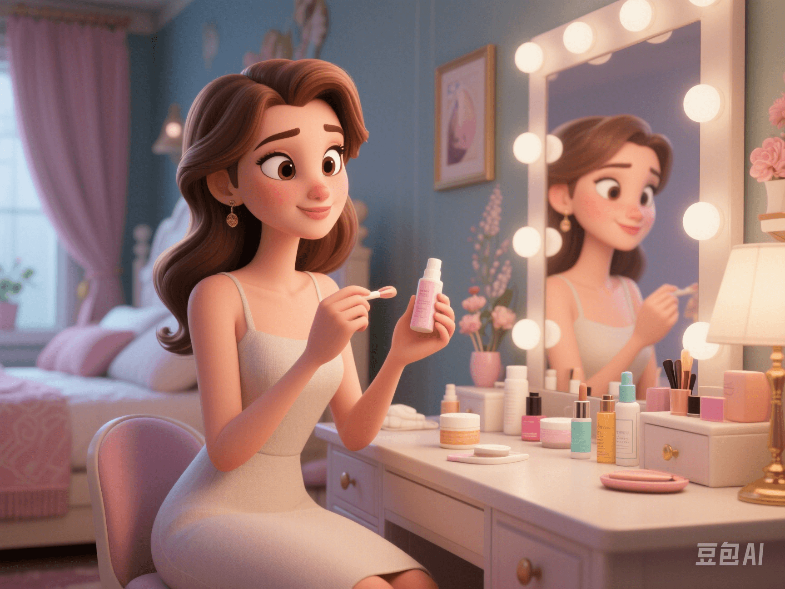

A Comprehensive Guide to Anti - Aging and Beauty
PeaceLove.Top Insights :2025-04-13
✨Let time pass more slowly and beauty last longer. ğŸ’â€â™€ï¸ğŸ’– "Getting old" may be the law of time, but "aging" can be managed! Modern women are paying more and more attention to anti - aging and beauty skincare that combines inner and outer beauty. They hope to maintain youthfulness and a confident smile in their busy lives. 😊🌟 This articleæ•´ç†s the most practical, scientific and natural beauty secrets for you to calmly face every change brought by time. 🌿
🌸 I. Anti - Aging Secrets from the Inside Out
🥗 1. Eat Your Way to Young Skin: Antioxidant Diet
- Foods rich in polyphenolic antioxidants (such as blueberries ğŸ‡, green tea ğŸµ, and dark chocolate ğŸ«) help neutralize free radicals and slow down skin aging.
- Supplementing with Omega - 3 fatty acids (such as salmon 🟠and flaxseeds) can strengthen the skin barrier and prevent dry lines and fine lines.
- A handful of nuts 🥜 + two glasses of warm water 💧 every day = a you with a rosy complexion from the inside!
🧘â€â™€ï¸ 2. Relieve Stress for the Mind and Body, the Key to Anti - Aging
- Long - term stress â¡ï¸ increased cortisol â¡ï¸ collagen loss âš ï¸
- Practice 10 - minute breathing meditation or yoga every day to help reduce anxiety and reverse "emotional" aging!
💆â€â™€ï¸ II. Skincare for Anti - Aging: Science + Persistence = Good Skin!
🧴 1. Recommended Golden Skincare Ingredients
- Retinol: Promotes cell renewal and fades fine lines ✨
- Hyaluronic acid: Provides high - efficiency hydration 💧 and maintains elasticity 💫
- Nicotinamide: Brightens the skin tone and improves dullness ✨
- Peptides: Supports collagen production and creates a firm contour 👸
Tip: Skincare is a long - term investment. Building "tolerance" gently is more important than seeking quick results!
🧼 2. Four - Step Daily Skincare Routine (for Anti - Aging)
- Gentle cleansing 🫧
- Enhanced anti - aging with essence 🔬
- Moisturize and lock in water with cream 💦
- Sun protection and antioxidant isolation â˜€ï¸ (Every day!)
🛌 III. Lifestyle Determines Your Youthfulness
🕒 The Sleeping Beauty Rule: 7 - 8 Hours of High - Quality Sleep Every Night
- The skin completes its "repair task" between 23:00 and 02:00. Staying up late = actively accelerating aging 🧟â€â™€ï¸
- Recommendations: Reduce blue light before bedtime 📵, take a hot bath ğŸ›, and use essential oils for better sleep 🕯ï¸
🚶â€â™€ï¸ Moderate Exercise: Maintain Metabolism
- 3 - 4 times of aerobic exercise + 1 - 2 times of strength training per week can improve blood circulation and enhance the rosy glow on the face ğŸƒâ€â™€ï¸â¤ï¸
- Don't underestimate "6000 brisk steps a day" 🚶â€â™€ï¸. It can really brighten your complexion ✨
🧴 IV. Medical Aesthetics for Anti - Aging: Technology Helps You Stay Young
- Intense pulsed light/thermage: Improves skin texture and tightens the contour 💡
- Hydrating injections/hyaluronic acid fillers: Hydrate dry skin and add fullness ✨
- Botulinum toxin: Precisely fades wrinkles and makes your expressions more natural and calm 😊
Reminder: It's very important to choose a regular institution and a qualified doctor! ğŸ”👩â€âš•ï¸
💬 V. Real Voices of Women on Anti - Aging
- ğŸ—£ï¸ "It's not that I'm not afraid of getting old, but I want to age gracefully."
- ğŸ—£ï¸ "It's never too late to really understand skincare after the age of 35!"
- ğŸ—£ï¸ "Skincare is not for others to see, but a way to pamper myself."
💖 Conclusion: You Deserve Long - lasting Beauty and Confidence
Anti - aging is not about resisting age, but about getting along gently with time; beauty is not about disguising yourself, but about learning to love yourself more. As long as you're willing to understand your body, treat your skin well, and manage your emotions, you're the most beautiful at every stage. 🌹
✨ Keep being a calm and shining woman, starting from today. 💪💕